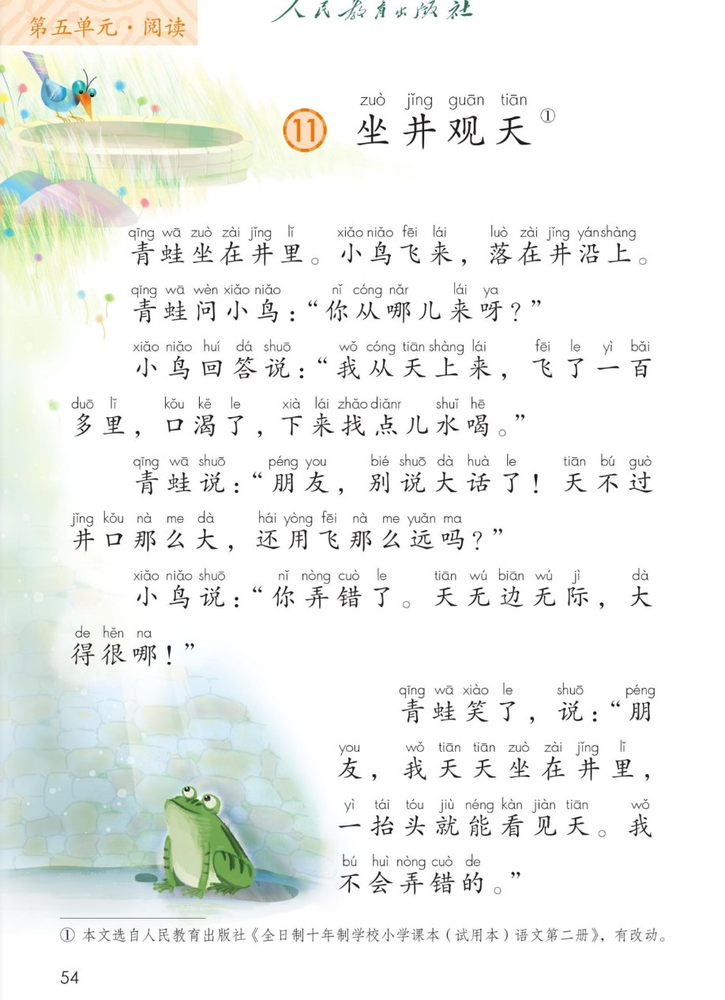
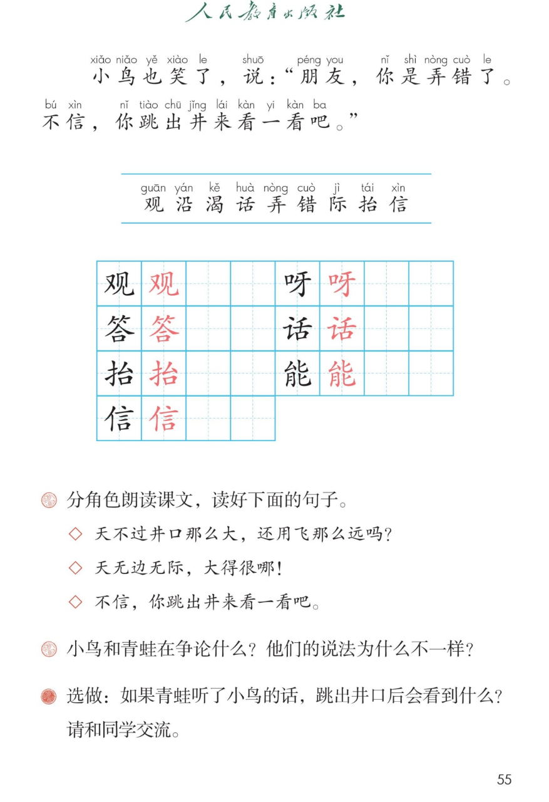

🐸 第 11 课《坐井观天》· 有声图文带读
统编版语文 · 第五单元·阅读 · 课本 P54~55
课文 7 个自然段
会认字 9
会写字 7
听写词 10
近义词 4 组
深入理解 8 题
本课本领 分角色朗读
🎧 五步学（可随时点任意一句、一个字、一个词单独听）： ① 听读课文 ——一句一句读，读到哪一句哪一句发光；开「跟读」后读完一句留时间让你自己读。② 学字词 ——9 个会认字、7 个会写字（含书写提示），点一个读一个。③ 词语·听写·造句 ——听写 10 个词（读两遍→你写→报答案→听示范句），再听 4 组近义词辨析。④ 深入理解 ——8 道题（认知 / 理解 / 运用 / 拓展），开放题答案不唯一，先想后看。⑤ 对话接龙·分角色 ——接着说出青蛙和小鸟的对话，再分角色朗读课文。
点段前的 ①~⑦ 听整段
🔁 跟读模式：关
👁 隐藏注音（自测用）
注音只标本课要认、要写的字，读音来自课本第 3 页生字表
🎤 朗读要求（老师标准） 不添字、不漏字、不回读 ；对话 ，要分清楚哪一句是谁说的；自信、有点不服气 ，“天不过井口那么大”要读得肯定；耐心、客气 ，“无边无际”“大得很哪”要读得开阔；笑 的意思读出来，语气轻松。
① 青蛙坐在井里。 小鸟飞来，落在井沿yán 上。
② 青蛙问小鸟：“你从哪儿来呀ya ？”
③ 小鸟回答dá 说：“我从天上来，飞了一百多里，口渴kě 了，下来找点儿水喝。”
④ 青蛙说：“朋友，别说大话huà 了！天不过井口那么大，还用飞那么远吗？”
⑤ 小鸟说：“你弄nòng 错cuò 了。天无边无际jì ，大得很哪！”
⑥ 青蛙笑了，说：“朋友，我天天坐在井里，一抬tái 头就能néng 看见天。我不会弄错的。”
⑦ 小鸟也笑了，说：“朋友，你是弄错了。不信xìn ，你跳出井口来看一看吧。”
🤔 想一想（点我可跳过）
点一张图，听读整页

第 1 张 · 课文与插图

第 2 张 · 生字与课后题
📖 人教版《语文》二年级上册 · 课本第 54~55 页 · 图片仅供个人学习，版权归人民教育出版社所有
点一个字，听读音、词语和课文里的句子
结构、部首、笔画与书写提示为通用规范，供参考，以教材和老师的指导为准
观
guān
观天 · 参观
6 画 · 左右
左窄右宽，竖弯钩舒展
答
dá
回答 · 答对
12 画 · 上下（竹）
竹头要扁，撇捺舒展
抬
tái
抬头 · 抬起
8 画 · 左右（扌）
提手横变提，上下对正
信
xìn
相信 · 不信
9 画 · 左右（亻）
左窄右宽，末横最长
呀
ya
来呀 · 走呀
7 画 · 左右（口）
口小偏上，竖钩要直
话
huà
大话 · 说话
8 画 · 左右（讠）
左窄右宽，口要写小
能
néng
能看见 · 能干
10 画 · 左右
左紧凑，两匕对齐
点一行，听读这一组词语
词 井沿 大话 无边无际
句 井口 弄错 抬头 相信
一 一抬头 一眨眼 一口井
读两遍 → 你在纸上写 → 报答案 → 听示范句
准备听写 · 共 10 个词
○ ○ ○
点下面的「开始听写」，听到一个词就写一个词。
▶ 开始听写
🔁 再读一遍
👁 看答案
点词听读，点句子听示范句，再自己说一句
1 井沿 课文词语
示范句：小鸟飞来，落在井沿上。
✏️ 我也能说：什么 + 落在井沿上
2 青蛙 课文词语
示范句：青蛙坐在井里。
✏️ 我也能说：青蛙 + 在哪里 + 做什么
3 口渴 课文词语
示范句：小鸟飞累了，口渴了，下来找水喝。
✏️ 我也能说：谁 + 口渴了 + 想做什么
4 喝水 课文词语
示范句：小鸟想找点儿水喝。
✏️ 我也能说：谁 + 什么时候 + 喝水
5 大话 课文词语
示范句：青蛙说：“朋友，别说大话了。”
✏️ 我也能说：谁 + 不说大话
6 弄错 会写字
示范句：小鸟说：“你弄错了。”
✏️ 我也能说：谁 + 把什么 + 弄错了
7 无边无际 课文词语
示范句：天无边无际，大得很哪。
✏️ 我也能说：什么 + 无边无际
8 抬头 会写字
示范句：我一抬头就能看见天。
✏️ 我也能说：我一抬头 + 就看见什么
9 相信 会写字
示范句：我相信小鸟说的话。
✏️ 我也能说：我相信 + 谁／什么
10 回答 会写字
示范句：小鸟回答说：“我从天上来。”
✏️ 我也能说：谁 + 回答 + 什么
相同点 / 不一样在哪 / 各造一句
观 — 看
相同：都是用眼睛看东西 。
不一样：观 是书上的说法，写文章常用；看 是平时说话用的，更随便。
观：我们去博物馆参观。
无边无际 — 一望无际
相同：都是说大得没有边、望不到头 。
不一样：无边无际 什么都能说（天、大海、草原）；一望无际 多写地面上的东西。
无边无际：天无边无际，大得很哪。
弄错 — 搞错
相同：都是说把事情做错、想错 。
不一样：弄错 比较轻，是一时没弄清；搞错 更口语，说话时常用。
弄错：这道题我弄错了。
口渴 — 口干
相同：都是说嘴里发干、想喝水 。
不一样：口渴 是想喝水，多半是运动、走远路以后；口干 是嘴里干，说话久了也会。
口渴：小鸟飞了一百多里，口渴了。
“看”的说法 看 瞧 望 盯 观
无…无… 无边无际 无忧无虑
带“井”的词 井口 井沿 井底 水井
数量词 一只小鸟 一口井 一片天 一百多里
标「答案不唯一」的题，说得有道理都对
认知 青蛙和小鸟分别在什么地方？看解析
🤔 想一想
解析：
青蛙 ：坐在井里。
小鸟 ：落在井沿上。井沿就是井口的边。
💡 读故事先看清谁在什么地方，后面才明白他们为什么说的不一样
认知 小鸟从哪儿来？它为什么落在井沿上？看解析
🤔 想一想
解析：
从哪儿来 ：从天上飞来，飞了一百多里。
为什么落下来 ：口渴了，下来找点儿水喝。
💡 “一百多里”说明小鸟飞得很远，见过的地方多
理解 青蛙为什么认为天只有井口那么大？看解析
🤔 想一想
解析：
它看到的天很小 ：坐在井里，一抬头只能看见井口那么一块天。
它没出去过 ：从没跳出井口，不知道井外还有那么大的一片天。
🌈 看到的一小部分，不等于全部——这就是“坐井观天”
理解 小鸟说“天无边无际”，它为什么这么说？看解析
🤔 想一想
解析：
它飞过 ：从天上飞来，飞了一百多里，看到的地方多。
它看到的 ：天一直延伸到很远，望不到边，所以叫无边无际。
💡 见过的东西越多，知道得越准——所以要走出去看一看
理解 小鸟和青蛙在争论什么？他们的说法为什么不一样？看解析
🤔 想一想
解析（课后第 2 题）：
争论什么 ：天到底有多大。
青蛙 ：坐在井里 → 只看见井口那么大 → 说天只有井口大。
小鸟 ：在天上飞过 → 看见天望不到边 → 说天无边无际。
🌈 说法不一样，是因为站的地方不一样、看到的不一样
运用 读好这三句话的语气：① 天不过井口那么大，还用飞那么远吗？② 天无边无际，大得很哪！③ 不信，你跳出井口来看一看吧。看解析
🤔 想一想
朗读提示（课后第 1 题）：
① 青蛙的话 ：读得肯定、有点不服气，“还用飞那么远吗”句末往上扬。
② 小鸟的话 ：读得开阔、慢一点，“大得很哪”读出感叹，“哪”读轻声。
③ 小鸟的话 ：读得客气、耐心，像在邀请别人去看。
💡 读对话，先想这句话是谁说的、他心里怎么想，语气就出来了
🌈 语气不必和老师一模一样，读出人物的心情就对
运用 用“一……就……”说一句话。看解析
🤔 想一想
参考答案：
课文原句 ：我一抬头就能看见天。
我也能说 ：我一回家就写作业。我一听到铃声就坐好。
🌈 答案不唯一，“一……就……”说的是两件事紧挨着发生
拓展 如果青蛙听了小鸟的话，跳出井口后会看到什么？看解析
🤔 想一想
参考答案（课本选做题，三种思路）：
看天 ：天无边无际，大得很，一眼望不到边。
看周围 ：田野、大树、小河、远山，还有来来往往的人。
说想法 ：原来天这么大，我不该只看见井口那一小块。
🌈 答案不唯一，说出两三条就很好
💬 对话支架：先说在哪儿 （青蛙在井里、小鸟在井沿）→ 接着青蛙问 （你从哪儿来）→ 再小鸟答 （从天上来，飞了一百多里）→ 然后争一争 （井口那么大 / 无边无际）→ 最后都笑了 ，请它跳出井口看一看。
点一个角色，听他（她）说的话
🐸 青蛙
“你从哪儿来呀？”
💬 要读出自信、有点不服气 的语气
🐦 小鸟
“我从天上来，飞了一百多里，口渴了，下来找点儿水喝。”
💬 要读出耐心、客气 的语气
📖 旁白
“青蛙坐在井里。”
💬 要读得清楚、平稳 ，像在讲故事
🧱 井沿
“小鸟飞来，落在井沿上。”
💬 要读得轻一点 ，让人听出小鸟飞累了停下来